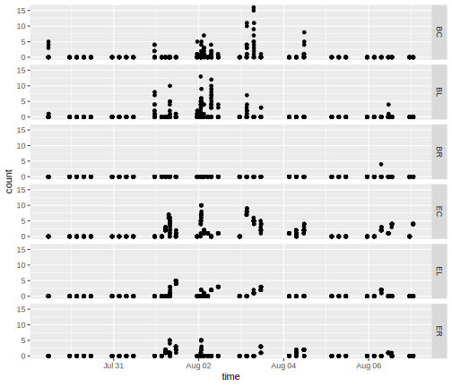
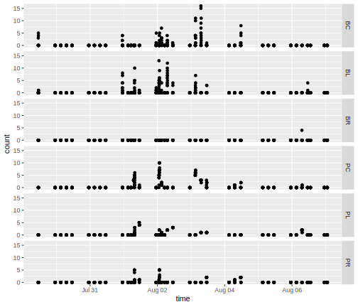
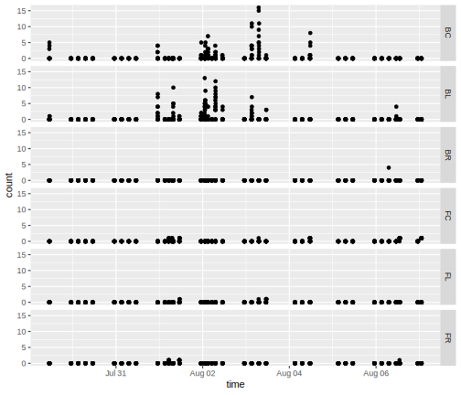
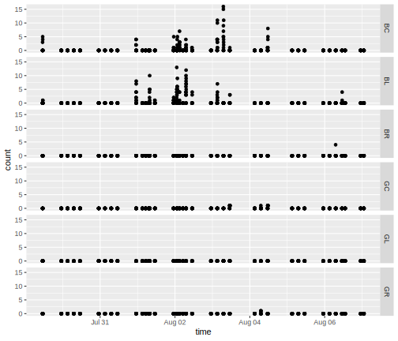

name: H23a3 .sidebar.left-column[ ### [Все лодки](#H23a3).fg[].bg[] ### [Безмоторные](#Hfa38) ### [Моторки](#H334e) ### [Катамараны](#Hc49a) ### [На якоре](#Hce98) ] .mainbar.right-column[  ] --- name: Hfa38 .sidebar.left-column[ ### [Все лодки](#H23a3) ### [Безмоторные](#Hfa38).fg[].bg[] ### [Моторки](#H334e) ### [Катамараны](#Hc49a) ### [На якоре](#Hce98) ] .mainbar.right-column[  ] --- name: H334e .sidebar.left-column[ ### [Все лодки](#H23a3) ### [Безмоторные](#Hfa38) ### [Моторки](#H334e).fg[].bg[] ### [Катамараны](#Hc49a) ### [На якоре](#Hce98) ] .mainbar.right-column[  ] --- name: Hc49a .sidebar.left-column[ ### [Все лодки](#H23a3) ### [Безмоторные](#Hfa38) ### [Моторки](#H334e) ### [Катамараны](#Hc49a).fg[].bg[] ### [На якоре](#Hce98) ] .mainbar.right-column[  ] --- name: Hce98 .sidebar.left-column[ ### [Все лодки](#H23a3) ### [Безмоторные](#Hfa38) ### [Моторки](#H334e) ### [Катамараны](#Hc49a) ### [На якоре](#Hce98).fg[].bg[] ] .mainbar.right-column[ ]